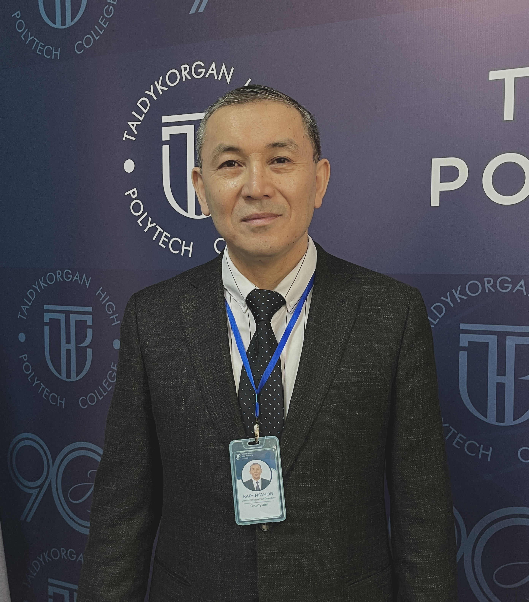

|  | Карчиганов Амангельды Рысбекович |
| Лауазымы | Арнайы пәндер оқытушысы |
|---|---|
| Бітірген оқу орны | Қазақ көлік және коммуникациялар академиясы |
| Диплом бойынша білімі | Жоғары, мамандығы: Автоматика, телемеханика және байланыс |
| Ғылыми дәрежесі, ғылыми атағы | |
| Біліктілігі және еңбек өтілі | Педагог-модератор, 23 жыл |
| Оқытатын модульдер |
1. Компьютерлерді, шеткері және коммуникациялық жабдықтарды жөндеу және қызмет көрсету 2. Үйді автоматтандыру жүйелерін енгізу бойынша жұмыстарды орындау 3. Телекоммуникациялармен қамтамасыз ету үшін антенна құрылғыларын монтаждауды орындау |
| Байланыс ақпараты | amantaikarciqanov7@gmail.com |
| Қосымша ақпараттар | Жетісу облысы, WorldSkills Zhetysu, «Электроника» құзыреттілігі бойынша сарапшы-компатриот |